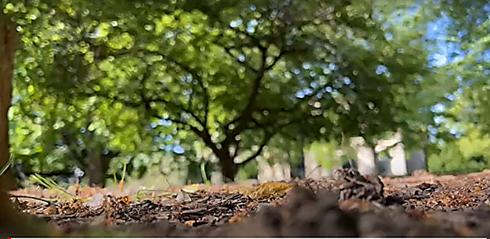
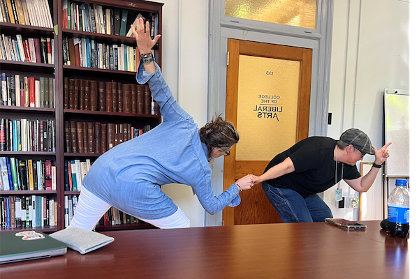
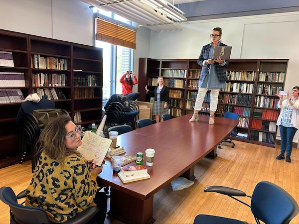
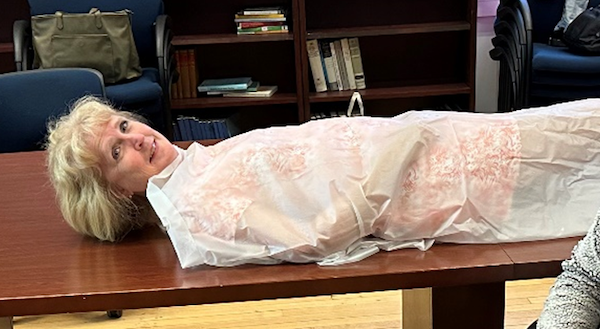

introduction
Rehearse, Revise, Regenerate: Critical Theater as Rhetorical Practice, A Digital Performance
Edited by Freddie (Fiona) Harris Ramsby and Michelle LaFrance
Digital Platform Design and Implementation by y nishizawa
Wireframe Design by Matthew Piwowarski
The awe-inspiring Greek theater at Taormina, Sicily, adorns the home page of this digital book, through which readers can enter and explore the digital “acts” composed by our contributors. Built in the third century CE, the theater was constructed on the side of Mount Tauro. Little of the Greek original structure exists today, besides a few seats, which are marked “with paleographic characters of the third century B.C” (Gabellone, Ferrari and Giuri 2). The buildings we see today are the result of an overhaul during the time of Imperial Rome (2). Nevertheless, the theater’s magnificence recalls the great Greek theater of Dionysus in Athens – built in the 6th century BC – in which Greek tragedians, satyr, and comic playwrights competed yearly for prizes at the Festival of Dionysus. At this site, and others like it in many Greek villages, the plays of Aristophanes, the most famous of the comedic playwrights, were performed.[1]
We open with the theater at Taormina and Aristophanes to ground this work in the close connections between rhetoric, performance, and embodiment central to Aristophanes’ “rhetorical plays.”[2] As Aristophanes took on politics, war, gender conflicts, religion, philosophy, and even rhetorical education in his plays, he often employed physicality as a performative device. Indeed, as Freddie (Fiona) Harris Ramsby, co-editor of this volume, observes in Language and Power on the Rhetorical Stage, Aristophanes’ “obsession with digestion, excretion, and other such bodily functions” in plays like Clouds, “insists that rhetoric is always subject to the body” (22). Citing Wilfred E. Major, Harris Ramsby notes that characters in Aristophanes’ plays both perform and embody commonplace language. That is, characters, such as the dueling logoi in Clouds (who literally personify competing rhetorical styles), performatively enact idioms, metaphors, and other popular terms that were ripe for satiric reckoning. The result, Harris Ramsby concludes, is a reconfiguration of language, offering new, often politicized meanings (Language and Powe, 23). Aristophanes’ personification of commonplace language-practice demonstrates the very real socio-political relationships between language and bodies. But it also, Harris Ramsby argues, allows us to “witness [the] shortcomings, [and the]…potential for violence and human undoing” (43) so often subtly encoded into everyday language practices.
This collection draws inspiration, too, from director-liberation philosopher Augusto Boal, whose Theater of the Oppressed likewise foregrounds the tightly interwoven relationships between bodies, language, and the political. Boal’s work positions theater as a method of political (qua rhetorical) activism that rejects the passivity encoded into traditional spectatorship.[3] Boal’s approach – particularly “image-play,” whereby actors perform images, create living interactive statues, “sculpt” one another’s bodies, and use their bodies to “represent” a situation or concept – asks us to consider how bodies and performative bodily-play might sift actualities of lived experience, like communication events, into higher visibility (112). Turning spectators into liberational “Spect-Actors,” for Boal, reworks theater into a site that mobilizes activist interventions (xxi).
More particular to this project, in Poetics of the Oppressed, Boal recognized the close intersections between the body and language as central to this liberatory transformation: Boal’s first stage of this poetics called for “Knowing the Body,” whereby “Spect-Actors” must participate in a series of exercises to explore the “body, its limitations and possibilities, its social distortions and possibilities of rehabilitation” (Theater of the Oppressed 102). Stage two entailed, “Making the body expressive.” Here, Boal suggests “a series of games by which one begins to express one’s self through the body, abandoning other, more common and habitual forms of expression” (102). In stage three, Boal poses “Theatre as language,” calling for practicing “theater as a language that is living and present, not as a finished product displaying images from the past” (102). And finally, the realization of “the theatre as discourse,” where the “spectator-actor creates ‘spectacles’ according to his need to discuss certain themes or rehearse certain actions” (102). Through these stages, the performing body is understood as both a site of and vehicle for the social order, with language practices as a central element in creating, sustaining, and ordering the social.
Contributors to this digital collection take their cues from Aristophanes and Boal. We see the body, performance, and communicative strategies as both incisive theatrical tools and rich sites for rhetoricians to explore. In this, we seek to collapse into one what are often understood as parallel projects: Rhetoricians study the ways that language infuses, informs, and shapes our ways of being in the world. Theatrical performances reconfigure language as something lived and felt, amplifying the body as rhetor, a vital rhetorical site that reveals the knitted politics of materiality. In our dramatic melding of these approaches, contributors to this collection leverage performances of everyday language to act out rhetorical analysis and discursive critique, so that performance, bodies in motion, and other theatrical tools move beyond mimesis and entertainment, to spotlight the highly political (so rhetorical and linguistic) relationships at the center of communicative moments. More simply, the digital “Acts” collected here perform language practices, seeking to underscore the intersections of language, the social order, and lived difference.
We have named our approach Critical Discursive Rhetorical Performance(CDRP), a methodological framework that facilitates the performed – and so embodied – exploration of language use. CDRP borrows liberally from Harris Ramsby’s concept of Critical Discourse Perspectives (CDP), which originally applied the principles of Critical Discourse Analysis (CDA) to investigate the embodied work of language within theatrical performances. Like CDA and CDP, CDRP is invested in the entanglements of language and social authority, understanding the body as a nexus of linguistic, rhetorical, and agentive meaning making. CDRP, however, moves beyond the interpretive analysis of language to use play with embodiment, movement, staging, dramatization, and rhetorically-informed interpretive lenses to shape the performance of language practices.
Our approach integrates tools from CDA, rhetorical theory, and the politically charged performance techniques of Aristophanes and Boal. In a similarly playful spirit, the videos and artist statements collected here employ multimodal, embodied, and rhetorically intensified performances to expose how language functions as a vehicle of power – enabling, obscuring, and reproducing structures of inequity, agency, and responsibility.
A Primer: When We Perform Critical Discourse and Rhetorical Analysis
It is no secret that theater is a powerfully creative site that has much to teach rhetoricians – and students in their classrooms – about the complexities of rhetoric (Fishman et al.; Love; Gencarella and Pezzullo; Harris Ramsby). Though they may not use the term “rhetorical,” figures of the theatrical world, such as Aristophanes and Boal, have also intuited that language, performance, and power (and so rhetoric) are often handshaking. When theatrical play is coupled with tools like the methodologies of CDA and rhetorical analysis, theatrical performances become studies of the very complexities rhetoricians have called us to better understand.
As we situate theatrical play in rhetorical studies, our project reflects a uniquely expansive moment in the field of rhetoric and writing. In recent decades, scholars in writing and rhetoric have often called for more complex definitions of rhetoric and related theories, especially as these foundations inform how we theorize and teach rhetorical situations (Hawk; Braidotti; Shipka a; Alexander and Rhodes a; Rhodes and Alexander; Corder). Emergent scholarship has responded to this call by examining embodiment (Chavez; Hawhee; Dolmage a; Dolmage b, Fleckenstein; Knoblauch and Mollier), publics, audiences, and evidence (Warner; Rice a; Rice b; Boyle and Rivers), multimodality (Shipka b; Alexander and Rhodes b; Yagelski; Arola and Wysocki; Rivers), and rhetorical ecologies (Edbauer [Rice]). Our project responds to these calls, bringing together theatrical performance, Boal’s “Spect-Actors”, CDA, and critical rhetoric, to afford “greater attention to the spaces, materials, and networks through which writing [and so the rhetorical] emerge” (Rhodes and Alexander).
As we’ve noted above, Aristophanes’ rhetorical and Boal’s transformative approach to theater as a means for social change is attuned to the close inter-workings of language and the social order. Similarly, performance studies scholars (Conquergood; Phelan; Sedgwick;Taylor; Muñoz) and drama-based educators (see Dawson and Lee; Tulk) often tacitly platform the study of rhetoric as an ecology – that is, critical, creative, pedagogical, and specifically embodied in time and space – as they demonstrate how language is lived in the here and now. Building on the work of rhetoricians and critical discourse analysts who have ventured into the multimodal (see Hidalgo; Alexander and Rhodes a; Machin and Mayr; Kress and Leeuwen), this digital collection blends critical rhetorical, CDA, and dramatic practice to understand that ecologies take shape where discursive power and embodied action intersect. This said, our work is most clearly indebted to the scholarship of CDA, the principles of which provide an initial center from which to expand.
CDA arose in functional linguistic circles of the 20th century and quickly garnered the interest of social and cultural critics, such as Michel Foucault, Jürgen Habermas, and Anthony Giddens, who argued that the workings of language were never neutral or disinterested. As work in CDA broadened through the 1970s to address social, cognitive, and rhetorical theory (in the arguments of Norman Fairclough, Teun van Dijk, or Ruth Wodak, for instance), the close overlaps and complements between linguistics and rhetorical studies became more clear. Laura Aull and Shawna Shapiro argue that focusing on linguistics promotes evidence-based understanding of the rhetoricity of language: “[L]inguistics . . . offers tools for systematic examination of language itself, including micro-level patterns (word and phrase, or lexicogrammatical patterns, such as noun phrases) and meso-level patterns (sentence and paragraph patterns, such as subject/verb coordination or rhetorical moves) as they inform or challenge language ideologies.” These linguistic tools for analysis operate at various levels of language structure, allowing CDA practitioners and rhetoricians to methodically dissect how power and meaning are encoded in everything from individual word choices to broader textual patterns, such as metaphor, idiom, and expression. (Hello, Aristophanes, we see you lurking in the wings of this quotation.)
In the last four decades, rhetoricians and writing researchers have begun to move seamlessly between the tool sets of CDA, which are language-based, and rhetorical analysis, which tend toward the analytic, meta-recognition of strategies and broader theories of communication. Tom Huckin, Jenny Andrus, and Jennifer Clary-Lemon note the similarities and throughways: like rhetoric, CDA addresses social problems, understands power relations as discursive, understands “discourse” (so communication, language-use, and rhetoric) as socially-constitutive, ideological, and mediating, and work with CDA as interpretive, explanatory, and analytic (108). The attraction to CDA for many scholars in linguistics and rhetoric stems from the bridges it enables between everyday language practice and larger social economies. Seemingly-small language meanings, in this framework, can have considerable effects.
The term “discourse,” as it describes the bridge between language practices and the everyday, is of foundational concern in these overlapping conversations.[4] Moreover, Paul Simpson, Andrea Mayr and Simon Statham argue that language accrues and aligns with power because it is concomitantly derived from and gate keeping of unequal access to valuable everyday social resources (2).[5] That is, social power is the ephemeral force that sanctions, celebrates, and amplifies some language practices, while devaluing and delegitimizing others. Certain ways of being with language are accepted and normalized; subordinate groups negotiate the legitimacy of dominant authority. Power is jointly produced in these moments of unequal pressure, alignment, and stigma. When we use “discourse,” we recognize exactly this relationality at the center of our language practices and rhetorical contexts, acknowledging that what we say is always a complex expression of who we are, what we do, and why we do it. In other words, CDA practitioners and rhetoricians see everyday language as one of the tools through which the world takes shape.
Inequity is what CDA roots out. CDA identifies patterns, presences, and influences in specific language use, emphasizing the imprints of power that might otherwise go unmarked, unacknowledged, or ignored in conventional language practices. Like rhetoricians, critical discourse analysts understand language as a site that is co-constituted within a complex ecology: a negotiation of exigency (often simplified as the speaker’s purpose or need to communicate), social conventions, and other linguistic hierarchies (Cooper; Edbauer; Jones).
The “utterance,” a linguistic feature of everyday conversations (spoken, written, and shared), is one of the foundational features of the linguistic study of asymmetrical power relationships, and so CDA. Utterances are similar to, but distinct from, sentences: a sentence is a grammatical unit (or an identifiable device of language), which carries a complete unit of meaning within itself. An utterance, however, is a unit of a “speech event” – its meaning becomes clear in relation to broader meaning making practices.[6] So, like a sentence, an utterance will have a beginning and an end, but the end of an utterance may not be determined by a punctuation mark. Utterances may be short: “Ow!” “Hello, you sexy beast,” or “There goes the neighborhood.” They may also be substantially longer: “Come away, O human child! / To the waters and the wild / With a faery hand in hand, / For the world’s more full of weeping than you can understand” (Yeats). For CDA practitioners, analysis of the meanings carried by utterances reveals what has been naturalized, normalized, obscured, or framed within a specific communicative situation. In this project, we define, study, and perform utterances, looking at how meaning making circulates within unique social, so rhetorical and linguistic, contexts.
As rhetoricians, linguists, and CDA practitioners well know, language can do dirty work, ignoring ethical boundaries, invisibilizing or muddying agents and intentions, weaponizing language, and paving the way for real-world consequences. But the attention to discourse embedded in CDA, and so the materialities of language, also attunes us to how language acts on and through the body. To illustrate, lett’s look at an example of CDA doing critical metaphor work to root out some of this grimy use: In a recent interview with Andreas Schulz, eminent critical discourse analyst Ruth Wodak illustrates the ways in which extreme right wing populist leaders in Europe and America employ metaphoric language to shape public perception of immigrants. She notes,
The linguistic strategies in discourses about refugees and migrants frequently involve metaphors of floods and other natural catastrophes (‘refugee flows, tsunami, waves of refugees’) as well as dehumanizing comparisons equating the foreigners with animals, especially vermin, and pathogens (foreigners are described as being like ‘parasites’ or ‘viruses’). (236)
These language moves intensify the perceived dangers of anti-immigration discourse. The portrayal of immigrants as a risk escalates as rhetoric becomes more extreme. Thus, immigrants are “presented as powerful and aggressive, even as ‘invaders’, while the majority population is presented as powerless and weak” (236). Whichever metaphor is deployed – to evoke a battle metaphor politicians often use – those same leaders present themselves as the antidote, the saviors of the realm (237).
Like Wodak, we want to emphasize the close relationship between language, rhetoric, and embodiment. That is, the ways metaphors can be understood to rhetorically constitute bodies of immigrants in ways that depersonalize and dehumanize them. CDA, then, shows us that our everyday language practices often inscribe the body as text. In this instance, powerful political forces “write” upon the body, shaping its appearance, behavior, and meaning. With Aristophanes’ dueling logoi in our rearview mirror, and as practitioners of CDRP, we are interested in the ways that CDA-as-performance can help us suss out the linguistic and rhetorical nature of embodiment
Our project asserts the significance of CDRP as a unique mode of learning and expression in a digital age that leans further and further into what N. Katherine Hayles refers to as the “dematerialization of embodiment” (121). While Hayles aimed her critique at post structuralism's discursive shift away from bodies, our project illuminates the depth and intricacy of the body as an underappreciated locus, origin, and force shaping rhetorical awarenesses and the practicalities of human communication. This becomes particularly relevant to rhetorical studies as AI technologies – particularly large language models and other machine learning systems – seem poised to take center stage. Our work also comes at a time when other conversations about multimodality have the potential to oversimplify or foreclose complex ideas about the relationships between language, bodies, and power. It is our hope that our project will, to shift Hayles’ work into new contexts, “play an important role in understanding the connections between the immateriality of information and the material conditions of its production” (121).
We also draw insight from Fairclough’s call for critical discourse analysts to consider a wider range of phenomena as objects of analysis. He writes,
Texts are to be understood in an inclusive sense: they are not only written texts but also, e.g., conversations and interviews, as well as the ‘multi-modal’ texts (mixing language and visual images) of television and the internet. Some events consist almost entirely of texts (e.g. a lecture or an interview), in others texts have a relatively small part (e.g. a game of chess). (11)
Fairclough infers that conceptions of ‘text’ are flexible. And indeed, many critical discourse analysts work in multimodal venues (Machin and Mayr; Kress and Leeuwen). However, critical discourse analysis, like Wodak’s work on the framing of immigrants and Hayle’s reminders of the dematerialization of bodies, ask us to expand where and how our analyses might be developed
Our work with CDRP goes this step further, augmenting CDA’s preferences for text-based understandings, to instead act out that is, theatrically play with[7] or perform – language practices, emphasizing through performance the effects of linguistic dirty work. By dramatizing embodied practice, highlighting the visceral effects of language, we align with Abby A. Knoblauch and Marie E. Moeller’s conception of the body as a “fleshly” site of knowledge construction and meaning making (7-9). We agree with Knoblauch and Moeller’s view that language and rhetoric shape bodies that are, “judged, controlled, mediated, medicated, incarcerated, all in unequal ways, as those in power react/respond to the physical characteristics of the specific and culturally coded body itself” (5). Thus paying attention to linguistic machinations at the core of a performance, CDRP practitioners bring power relationships into relief – a form of dramatic disobedience central to the best rhetorical and CDA work – as performers are set on unmasking communicative practices that obscure, disavow, or normalize dehumanizing, racializing, and authoritative language practices. CDA, Aristophanic and Boalsian strategies offer a tool box to pursue rhetorical interests; rhetorical analysis via the body helps us to further situate and hone CDA-based analytics. In the playful performances of CDRP, we see a means to feel out and then demonstrate how language and its rhetorical framings conscribe and animate bodies.
These foundations in place, let us take you to the moments where we began to realize the power of these theories brought to praxis. We turn now to the origin story of this collection.
CDRP: an Origin Story
Our ordinary conceptual system, in terms of which we both think and act, is fundamentally metaphorical in nature.
Lakoff and Johnson (4).
This collection came out of a two-day Rhetoric Society of America workshop at Penn State University in summer of 2023, organized by Harris Ramsby and Jacqueline Rhodes. Synthesizing across Harris Ramsby’s background in theater, rhetoric, and CDA and Rhodes’ expertise in feminist queer rhetoric and filmmaking, the workshop proposed exploring theater and documentary filmmaking as venues for critical, creative, and embodied rhetorical practice. In this workshop, the creative seeds of what we now name CDRP began to germinate.
Let us offer a few snapshots of the ways workshop participants were inspired by Harris Ramby’s and Rhodes’ call to perform embodied CDA.
Picture now in your mind’s eye, a campus of greens, enormous trees, and stately historical buildings. . . as we shift gears. . .and, begin scene.
Michelle strolls in after lunch. She looks pleased, content. A couple of us notice grass in her hair. The rest of us are stuffed from the Indian restaurant off College Avenue. Michelle, however, has been prostrate on the lawn, belly resting in the cool grass. Crawling prone, she hunts for the space where green meets brown, where grass meets soil, to capture the border where nature is manipulated. In this liminal zone, she searches for the perfect visual representation of dirt. She is working through the ways definitions of dirt can be read as metaphors of social discomfort with the natural world.

(Image Credit: Michelle LaFrance)
Later, Frances lowers herself into a trashcan. Lydia dons a ball cap and grins broadly. Marion rolls up a large piece of paper; she has a megaphone! We’ve transformed the majestic entrance of the Burrowes building into an urban Sesame Street set. Marion simulates a newscaster, while Lydia satirizes the passive voice. Her character, child-like and innocent, performs the ways that journalists delete active agents in stories describing the actions of police, thereby diffusing responsibility for brutality.
Racial slurs were shouted, buildings were bombed, and families were displaced during the tumultuous period of civil unrest.
And, as the end of the day approaches, we scout the hallways of the Sparks Building, usually home to the University’s departments of foreign languages, to locate the perfect backdrop. Once situated, Jackie stands on a bench, iPhone aloft. Fiona manipulates the font on the screen of a laptop, so Marion can read her script from this improvised “prompter.” As she recites her manifesto on improving conditions for working mothers, Michelle and Lydia pile on plastic bags and bottles, asking questions and making demands. We have to reshoot several times as Marion, giggling, stuffs a Gatorade bottle down her t-shirt, and navigates several burlap bags on each shoulder. Baggage and language, however, eventually perform the challenges of motherhood.
We need you to stay late tonight to finish this project.
Can I have ice cream? You can have until 8pm to send me the project proposal.
The kids are asking for a snack!
* * *
During those sunny days in June, Harris Ramsby and Rhodes invited participants to bring CDA into creative conversation with rhetorical embodiment and theatrical practice. First, they discussed the models offered by Aristophanes’ rhetorical plays, then they offered participants opportunities to “try on” the critical practice of linguistic analysis reimagined via Boal’s guidelines for activist dramatic performance.

Image Credit: Meghan Harlow
We “got into” our bodies by discussing and creatively adopting Boalsian strategies:
-
“Knowing the Body”: We played various theater games to get to know our own bodies, break down inhibitions, and foster camaraderie.
-
“Making the Body Expressive”: Participants had been asked to bring documents, scripts, and personal stories to the conference table; we shared our ideas for how these texts and their utterances worked linguistically and rhetorically on our bodies or demonstrated embodiment-in-action.
“Theatre as Language”: Even during this first sharing, our bodies were an undeniable presence. As we read our example texts and talked together, our conversations slid seamlessly into “performances” of rhetorical and linguistic features. We began to imagine staging and blocking, collaboratively contributing to others’ ideas as we worked through the dramatic and theatrical problems presented.
“Poetics as Liberation”: During our third morning together, we collaboratively filmed our projects, creating impromptu and rudimentary scenes, and tweaking our scripts as we learned in real time about the shaping influence of language. Inspired by the rhetorical and linguistic sensibility inherent to Boal’s ideas, our performances emphasized manipulative and occluded, yet common, communicative situations.
We thus found ourselves, over the course of the three-day workshop, engaging in a nuanced bodily intervention into everyday language and rhetorical practice, revealing through our bodily practice the silent coercive, persuasive, and interpolative nature of common texts and everyday speech. Alongside Michelle’s foraging for earthy metaphors, Lydia’s performance of Gabrielle’s script demonstrating the cloaking functions of passive voice, and Marion’s enactment of interrogatives and imperatives, other participants staged skits enacting critical discourse analytics and rhetorical framing, which we eventually recorded, edited, and showcased in the final hours of the workshop.

Image Credit: Jacqueline Rhodes
As we arranged ourselves according to our CDA tools and Boal’s advice on the bodily prep of discursive critique, we made an important discovery about the nature of academic knowledge making. “Best academic conference, ever, ” enthused Meghan. In between riotous bouts of laughter and several turns of play, we pondered why? Participants were fueled by the excitement of releasing themselves from the confines of textual conventions and the constraints of acceptable scholarly language that often establishes the field of rhetorical studies. It took just a few hours, and a willingness to play, for the group to transcend the borders of text to a place where language, rhetoric, and bodies meet, moving from page to analytic embodiment, and seamlessly once more to the rhetoric of staging and drama.
Indeed, we “broke through into performance,” to evoke Dell Hymes’ groundbreaking work in linguistic anthropology and the pathways it enabled for our own projects. For Hymes, whose instrumental work in folklore and anthropology has blurred the boundaries between performance studies, linguistics, and social critique, performance is a knowing enactment of cultural values embedded in language, which moves from the mundane (grammatical knowledge) to the creative (performing in social, so rhetorical, contexts). In linguistic study, performance is often understood as a savvy interpretation, classification, and reporting process (83). In folklore studies, performance is an act of doing in a specific context. For Hymes, there is little difference.
Our playful discoveries during that workshop yanked us out of the theoretical confines of textual discourse analysis to the nascent and often underrecognized rhetorical properties of performance. For Hymes, a breakthrough-to-performance occurs when one becomes competent; when we not only know how to do something, but can actually perform that something within a specific cultural context. The doing, then, of CDA, is also a breakthrough performance, which translates theoretical knowledge into practical action or – with a little push and the right contexts – drama. The rhetorical, while not central to Hymes’ claim, is a ghost presence in this process of translation – the invisible hand steering the dramatic decisions to be made.
So while the RSA Institute began with a series of theatrical exercises to foreground the rhetorical performances deeply embedded/embodied in everyday language practices, we quickly realized the liberatory potentialities of the form that we embraced. Our rhetorical bodies performed rhetorical linguistics in ways that made the knowledge tangible –in the body. In our efforts to enact the theoretical, we became playfully subversive: standing on tables, giggling unabashedly, scuttling down corridors, slinking around areas that had not been allotted to our seminar space, being too loud. To put our vision of CDRP into action, we scoured the campus and our hotel rooms for props – a shower curtain became a full-body prophylactic, and a trash can in a lobby became a Sesame Street-like prop – activities echoing Jody Shipka’s insights into “processes of making” which “helps illuminate the highly distributed, embodied, translingual, and multi- modal aspects of all communicative practice, something that is often overlooked or rendered invisible when analyzing final/finished texts, products, or performances” (253).

Image Credit: Jacqueline Rhodes
By the conclusion of the workshop CDRP, our methodology, was born. This collection emerged from our realization that our workshop’s critical performances reimagined forms of rhetorical and linguistic critique that were not only powerful, but also powerfully instructive. When our performances become forms of embodied analysis, we believe, we raise the workings of language to intelligibility. What is more, the urgent need to discuss and rehearse language that irks, frustrates, and terrifies – language that infuriates and silences through its pretense of normalcy – has never seemed more timely for our scholarship, classrooms, and communities. The CDRP enactments in this book illuminate the nitty-gritty of language use that CDA practitioners study, but also ask us to reimagine our primary strategies of teaching and learning rhetorical and linguistic operations.
Performing a rhetorical analysis can make tangible the felt-sense impact of common linguistic features, such as nominalization, presupposition, sentence complexity, and other aspects of word order. CDRP might additionally support more complex analytic unpackings of epistemological, semantic, and pragmatic aspects of language – such as rhetorical framing, metaphors, lexicality, and everyday language conflicts. Our approach enacts what the “Mt. Oread Manifesto on Rhetorical Education” identifies as the pedagogical, civic, transdisciplinary, and transrhetorical possibilities of “all modes of communication,” particularly “projects that look at the interplay of rhetoric and the civic sphere” (4). Inspired by Aristophanes and Boal, our enactments of CDRP are a means by which we may become more savvy about language and power to reclaim agency.
Our “Acts”
Welcome. Please Silence Your Cell Phones and Refrain from Unnecessary Conversation.
As this is a digital collection, we have been afforded a good deal of creative latitude in presenting examples of CDRP for readers. In keeping with our theatrical theme, and with one eye fixed on our unwitting patrons – Aristophanes and Boal – we have curated a series of multi and transmodal “acts,” composed by contributors who attended the RSA institute and others invited to join with us as the collection gained traction. Acts offer each performer a “stage” in the form of a unique webpage, where they present their transmodal performance of language work, anchored in time and space by an Artist’s Statement. The Acts move from physical spaces (Act 1) through environmental concerns (Act 2), historical racial injustices (Act 3), gender and power (Act 4-6), racialized temporality (Act 7) and pedagogy (Acts 8 & 9).
As our audience, you may sample the acts in the order our text describes below or more randomly. We have been sure to provide links between performances for those who are more linearly motivated, as well as “back” buttons for those who’d like to follow a different order. We also want to recognize the wide array of tech accessible to contributors, acknowledging the many ways that gaps in tech-accessibility yet structure the scholarship of our field and the specific projects and visions collected here. We actively chose to overlook gaps in technology and its affordances so that we might support a range of voices in the field and enact inclusivity.
In Act 1, Lydia McDermott and Sueli Gwiazdowski open our collection with “The Doorway.” This video focuses on college accessibility statements, often in passive construction, juxtaposed with the built environment that contradicts the ideals espoused in the statements. Using video, interview, and archival research, they illustrate the ways that declarative statements, sprinkled with optative sentences expressing ideals or hopes, obfuscate the reality of built environments that are inaccessible to wheelchair users. The video prompts us to interrogate the ways in which our built environment positions us into uneven power relations. Sueli, a student, is a wheelchair user and disability community activist. Lydia, a professor, has an invisible disability and teaches courses in disability rhetoric. Their video follows Sueli as she navigates a central campus location, highlighting the grueling process of entering the student center’s doorway and capturing the innovation a wheelchair user must employ to enter this educational space. It is not just the building that is kept from the disabled person, but also the information, materials, connections, and education beyond the door. Additionally, the video describes, through interview, a specific instance of harm to Sueli, which illuminates the relationship a person with a mobility disability has to their mobility aids, as extensions of a body. A violation of that aid can feel like a violation of the body. This act is useful for those interested in rhetorical embodiment; disability rhetoric; and syntax and pragmatics in Critical Discursive Rhetorical Performance.
Act 2, a short film, “Dirt: A Play in Composted Text” and an accompanying Artist’s Statement by Michelle LaFrance, explores the metaphorical nature of dirt/soil/compost to critically question how everyday language use, particularly definitions, conceptualizes the natural world as devoid of agency, inanimate, and/or dead. LaFrance connects her film to current work on ambient and material rhetorics, as well as multimodal and material ecologies. LaFrance’s project adopts Boal’s “social poesis” – a critically-minded poetry that seeks to make change – as her script riffs on critical metaphor theory, ideals of genre and intertextuality.
In Act 3, Gabrielle Wilkosz’ “C4 Street,” a political-satirical nod to Sesame Street, moves from soil to concrete. This act marshals satire as civil civic discourse, demonstrating the language the popular press used to discuss the 1985 MOVE bombing, whereby Philadelphia law enforcement killed 11 people, some of whom were children, and decimated residential homes belonging to the black liberation organization MOVE. Focusing on agent deletion in passive voice constructions, metaphoric criticism, and subject/actor obfuscation, the actor-rhetoricians in this chapter interrogate how reporting on the bombing erases culpability and oppression.
In Act 4, Amy Piwowarski, with help from y nishizawa (camera and web design), and Paul LaTorre (actor) gives us “Measured Misconduct: Angelo, Harvey, Larry, et al.” Inspired by Boal’s “Forum Theater”, this troupe performs the language of men accused of sexual misconduct - specifically, agent obfuscation and elision, as well as coercion and compliance. The actors achieve this through performances of two scenes from Shakespeare’s Measure for Measure- blocking their characters’ movements based on syntactic patterns employed in real-life instances of sexual misconduct. Particularly, Piwowarksi, who plays Isabella, inhabits the ways language performs avoidance of accountability and victim-blaming. The result is a twisted vision of the victim framed as an aggressor.
In Act 5, Liz De Betta’s “Un-M-Othered” stages a critical discourse analysis of adoption language through embodied performance. Using tools from CDA – including metaphor theory, presupposition, and subject-object constructions – Liz interrogates dominant adoption narratives that frame adoptees as “gifts” and erase birth mothers. Drawing on Boal’s Theatre of the Oppressed, particularly the stages of “Making the Body Expressive” and “Theater as Discourse,” Liz performs counter-narratives that expose the coercive power of euphemistic language. This act exemplifies CDRP by turning rhetorical critique into visceral, poetic theater that reclaims voice and agency from within the adoptee experience.
Our 6th Act, “Working Mother/Mothering Worker” by Marion Wolfe builds on the previous chapter’s exploration of mothering. Using CDRP to analyze the rhetoric surrounding motherhood, this act focuses specifically on interrogation and imperatives, direct and indirect speech acts, and differing modalities to analyze the messages given to “working mothers” in popular media, at work, and at home. This act uses Boal’s concept of “Theatre as Discourse,” specifically “Analytical Theatre” and “Rituals and Masks,” to demonstrate the unrealistic nature of demands placed on mothers and how these demands shape our perceptions of “the Mother” as a ritualized social role. As it unfolds, this performance demonstrates the tensions between public and private rhetorics, and demonstrates the embodied nature of everyday language.
In Act 7, Temporal Marking of the Percussive Corporeality,” Alexis McGee meditates on how time is communicated through the body. In establishing a link between time and the body’s ability to communicate beyond words, this video/essay reaffirms the importance of recognizing how Black bodies assert a corporeal grammar, an agency. To do this, Act 7 layers different responses to how time has influenced the way Black bodies are represented in social imaginations. Rather than focus on the oppressive imagination that tries to lock Blackness in particular scripts, this act uses Boal’s concept of “myth theater” to reveal and highlight how Black bodies can mobilize our various temporal and corporeal ways of being to assert our agency.
In Act 8, “Acting [Out] Critical Discourse Analysis,” Freddie Harris Ramsby details a methodology for integrating CDA into classroom settings through theatrical play. Inspired by Aristophanes’ embodiment of commonplace language, and Boal’s image play, the videos in this Act demonstrate how to embody political metaphors, assumptive presuppositions, and agent delenting nominalizations. Through these activities, students learn CDA basics while connecting language analysis with theatrical techniques, making hidden language patterns visible through performance. This act provides educators with concrete examples to help students recognize and respond to the rhetorical dimensions of subtly coercive discourses.
Curtain: “Choose Your Own Adventure: Critical (Role)Play for Developing Writers,” by Michelle LaFrance serves as our CODA. In it, she explores how she has adapted performative strategies of critical play, such as role play, satire and parody, and a “Choose Your Own Adventure” assignment, that asked students to adopt personas, experiment with voice, and blend or break genres in their written assignments. The chapter argues that critical play is a powerful pedagogical method for cultivating rhetorical awareness, as it asks writers to think about how their own voices and stylistic choices meet academic and generic writing conventions. LaFrance builds on Harris’s work with CDRP, but also demonstrates how writing exercises can also embrace theatrical play.
The Artist’s Statements provided for each Act and the collected Acts show the range and possibility of critical performance as sites that embrace complexities at the heart of conversations about the study of rhetoric and rhetorical education. As the individual responses to discursive power showcased here carry forward each participant’s understanding of their selected text’s material effects, we see new pathways well worth exploring in research, classroom, and community contexts. As the authors of this introduction and the editors (or stage managers) of these performances, we look forward to further discussions of this form and its possibilities.
Without further ado, we hope you enjoy the show.
Works Cited
Alexander, Jonathan, and Jacqueline Rhodes. On Multimodality: New Media in Composition Studies, National Council of Teachers of English, 2014.
———. “Queerness, Multimodality, and the Possibilities of Re/Orientation.” Composing Media Composing Embodiment, edited by Kristin L. Arola and Anne Frances Wysocki, UP of Colorado, 2012.
“Ancient Greek Playwrights,” Randolph College, 2024, https://www.randolphcollege.edu/greekplay/ancient-greek-playwrights/
Arola, Kristin L., and Anne Frances Wysocki, editors. Composing (Media) = Composing (Embodiment): Bodies, Technologies, Writing, the Teaching of Writing. Utah State UP, 2012.
Aull, Laura, and Shawna Shapiro. “FAQs about Language and Linguistics in Writing.”; WAC Clearinghouse, Colorado State University, https://wac.colostate.edu/repository/articles/faqs-about-language-and-linguistics-in-writing/.
Boal, Augusto. Theatre of the Oppressed. Translated by Emily Fryer, 3rd ed., Pluto Press, 2008.
Boyle, Casey and Nathaniel Rivers. “Augmented Publics” Co-authored with Nathaniel Rivers. Circulation, Writing, and Rhetoric, edited. Laurie Gries and Collin Brook. Utah State University Press, 2018, pp. 83-101.
Braidotti, Rosie. The Posthuman, 2013.
Chávez, K. “The Body: An Abstract and Actual Rhetorical Concept.” Rhetoric Society Quarterly, vol.48, no. 3, 2018, pp. 242-250.
Conquergood, Dwight. “Ethnography, Rhetoric, and Performance.” Quarterly journal of Speech, vol. 78, no. 1, 1992, pp. 80-97, https://doi.org/10.1080/00335639209383982
Corder, Jim. “Argument as Emergence, Rhetoric as Love.” Rhetoric Review, vol 4, no. 1, 1985, pp. 16-32. https://www.jstor.org/stable/465944
Dawson, Kathryn and Bridget Kiger Lee. Drama Based Pedagogy: Activating Learning Across the Curriculum. Intellect Books, 2018.
Dolmage, J. “Breathe Upon Us an Even Flame: Hephaestus, History, and the Body of Rhetoric.” Rhetoric Review, vol. 25, no. 2, 2006, pp. 119 – 40, https://www.jstor.org/stable/20176710
———. “Mapping Composition: Inviting Disability in the Front Door.”; Composing Other Spaces, edited by D. R. Powell and J. P. Tassoni, Hampton, 2009, pp. 121-144.
Edbauer, Jenny. “Unframing Models of Public Distribution: From Rhetorical Situation to Rhetorical Ecologies,” Rhetoric Society Quarterly, vol. 35, no. 4, 2005, pp. 5-24, https://www.jstor.org/stable/40232607
Fairclough, Norman. “Critical Discourse Analysis.” In The Routledge Handbook of Discourse Analysis, edited by Michael Handford and James Paul Gee, 2012, pp. 9-13.
Fishman, Jenn, et al. “Performing Writing, Performing Literacy.” College Composition and Communication, vol. 57, no. 2, 2005, pp. 224-252, https://www.jstor.org/stable/30037914.
Fleckenstein, Kristie S. Embodied Literacies: Imageword and a Poetics of Teaching. Southern Illinois UP, 2003.
Gabellone, Francesco, Ivan Ferrari, and Francesco Giuri, “The Greek-Roman Theater of Taormina: Towards a Reconstruction.” Proceedings of the 22nd International Conference on Cultural Heritage and New Technologies, Vienna, Austria, 2017.
Gee, James Paul. Situated Language and Learning: A Critique of Traditional Schooling. Routledge, 2004, pp. 107-108.
Gencarella, Stephen Olbrys. and Phaedra C Pezzullo, editors, Readings on Rhetoric and Performance, Strata, 2010.
Graff, Gerald. “What We Say When We Don’t Talk about Creative Writing.” College English, vol. 71, no. 3, 2009, pp. 271-279.
Harris Ramsby, Fiona. Language and Power on the Rhetorical Stage: Theory in the Body, Routledge Studies in Rhetoric and Communication, Taylor & Francis, Kindle Edition, 2021.
———. “The Drama as Rhetorical Critique: Language, Bodies, and Power in Angels in America.” Rhetoric Review, vol. 33, no. 4, 2014, pp. 403-420. Taylor & Francis Online, https://doi.org/10.1080/07350198.2014.947231.
Hawhee, Debra. Bodily Arts: Rhetoric and Athletics in Ancient Greece, University of Texas Press, 2004.
Hayles, Katherine. “The Materiality of Informatics.” Issues in Integrative Studies, no. 10, 1992, pp. 121-144.
Hawk, Byron. A Counter-History of Composition: Toward Methodologies of Complexity. Pittsburgh: University of Pittsburgh Press, 2007.
Hesse, Douglas. “The Place of Creative Writing in Composition Studies.” College Composition and Communication, vol. 63, no. 3, 2010, pp. 520-524.
Hildalgo, Alexandra. Cámara Retórica: A Feminist Filmmaking Methodology for Rhetoric and Composition. Computers and Composition Digital Press, Utah State UP, 2017.
Huckin, Thomas, Jennifer Andrus and Jennifer Clary-Lemon. “Critical discourse analysis and rhetoric and composition.” College Composition & Communication Vol. 64, No. 1, Research Methodologies (September 2012), pp. 107-129, https://doi.org/10.58680/ccc201220861.
Hymes, Dell. “Breakthrough into Performance.” In Folklore: Performance and Communication, edited by Dan Ben-Amos and Kenneth S. Goldstein, pp. 11-74, Mouton, 1975.
Knoblauch, A. Abby; Moeller, Marie E. Bodies of Knowledge: Embodied Rhetorics in Theory and Practice. Utah State University Press. Kindle Edition.
Kress, Gunther R., and Theo Van Leeuwen. Multimodal discourse: The Modes and Media of Contemporary Communication, Arnold, 2001.
LaFrance, Michelle and Jay Hardee. “The Irreverent Rhetorician Vlogs It Out: A Case Study of Creative Play for Graduate Student Writers (in Experimental Form).” JAELP: Journal for the Assembly of Expanded Perspectives on Learning, vol. 27, 2022, pp. 39-59.
Lakoff, George and Mark Johnson. Metaphors We Live By. University of Chicago Press, 2003.
Love, Meredith A. “A Relevant Past: Re-Membering Rhetoric and Performance,” Rhetoric Review, vol. 35, no. 3, pp. 226-238, https://doi.org/10.1080/07350198.2016.1178996.
Machin, David and Andrea Mayr. How to Do Critical Discourse Analysis: A Multimodal Introduction. Sage, 2012.
Major, Wilfred E. The Court of Comedy: Aristophanes, Rhetoric, and Democracy in Fifth-Century Athens. The Ohio State University Press, 2013.
The Mt. Oread Manifesto on Rhetorical Education 2013, Rhetoric Society Quarterly, vol. 44, no. 1, 2014, pp. 1-5, https://doi.org/10.1080/02773945.2014.874871.
Micciche, Laura. “Writing as Feminist Rhetorical Theory.” Rhetorica in Motion: Feminist Rhetorical Methods and Methodologies, edited by Eileen Schelle and K. J. Rawson, University of Pittsburgh, 2010, pp. 173-188.
Muñoz, José Esteban. Cruising Utopia: The Then and There of Queer Futurity. NYU Press, 2009.
McKerrow, Raymie E. “Critical Rhetoric: Theory and Praxis.” Communication Monographs, vol. 56, no. 2, 1989, pp. 91-111, https://doi.org/10.1080/03637758909390253.
Oleksiak, Timothy. “Slow Peer Review in the Writing Classroom.” Pedagogy, vol. 21, no. 2, 2021, pp. 369-383.
Phelan, Peggy.Unmarked: The Politics of Performance. Routledge, 1993.
Rhodes, Jacqueline, and Jonathan Alexander. Techne: Queer Meditations on Writing the Self. Computers and Composition Digital Press, 2015.
Rice, Jenny. Distant Publics: Development Rhetoric and the Subject of Crisis. Pittsburgh, PA: University of Pittsburgh Press, 2012.
———. Awful Archives: Conspiracy Theory, Rhetoric, and Acts of Evidence. The Ohio State University Press, 2020.
Rivers, Nathaniel. “Deep Ambivalence and Wild Objects: Toward a Strange Environmentalism.” Rhetoric Society Quarterly, vol 45. No. 4, 2015, pp. 420-440.
Roozen, Kevin. “Fan fic-ing” English studies: A Case Study Exploring the Interplay of Vernacular Literacies and Disciplinary Engagement. Research in the Teaching of English, vol. 44, no. 2, 2009, pp. 136-169.
Sedgewick, Eve Kosofsky. Touching Feeling: Affect, Pedagogy, Performativity. Duke UP, 2003.
Shipka, Jody. “Transmodality in/and Processes of Making: Changing Dispositions and Practice.” College English, vol. 78, no. 3, 2016, pp. 250-257.
———. Toward a Composition Made Whole. University of Pittsburgh Press, 2011.
Simpson, Paul, Andrea Mayr and Simon Statham. Language and Power: A Resource Book for Students, 2nd Edition, 2019.
Sirc, Geoffrey. English Composition as a Happening. Utah State University Press, 2002.
Sullivan, Patricia Suzanne. Experimental Writing in Composition: Aesthetics and Pedagogies. University of Pittsburgh Press, 2012.
Taylor, Diana. The Archive and the Repertoire: Performing Cultural Memory in the Americas. Duke UP, 2003.
Tulk, Nikki. Performing the Wound: Practicing a Feminist Theatre of Becoming. Routledge, 2022.
Van Dijk, Teun A. “Discourse and Manipulation.” Discourse & Society, vol. 17, no. 3, 2006, pp. 359–83, http://www.jstor.org/stable/42889055.
Warner, Michael. Publics and Counterpublics. Zone Books, 2005.
Wodak, Ruth and Michael Meyer. Methods for Critical Discourse Analysis (Second Edition), Sage, 2009.
———. “The Boundaries of What Can be Said Have Shifted’: An Expert Interview with Ruth Wodak (questions posed by Andreas Schulz).” Discourse & Society, vol 31, no 2, 2020, pp. 235-244. https://doi.org/10.1177/0957926519889109.
Wysocki, Anne Frances. “Introduction.” Composing Media / Composing Embodiment, edited by Kristin R. Arola and Anne Wysocki. Utah State UP, 2012, pp. 1–24.
Yagelski, R. Writing as a Way of Being: Writing Instruction, Nonduality, and the Crisis of Sustainability. Hampton Press, 2004.
Yeats, William Butler. “The Stolen Child.” Poems, 1895. Miss Print, 16 Apr. 2021, https://missprint.wordpress.com/2021/04/16/poetically-speaking-the-stolen-child-by-w-b-yeats/..
Notes
[1] Aristophanes, whose first play The Banqueters was produced at the Theater of Dionysus in 427 BC (“Ancient Greek Playwrights”), went on to have a prolific career, producing such famous plays as Clouds (423 BC), where he satirizes Greek Rhetorical Education, (423 BC), Birds, (414 BC) and Lysistrata (411 BC) — the latter plays providing commentary on the Peloponnesian War. His plays, as Edith Hall notes in an interview with James Robson for the Open University, were immensely political, well known, for instance, for his biting commentary on the popular democratic leader Cleon (“Aristophanes Athens”). They were also notably vulgar, as Robson acknowledges, “given its earthy and obscene origins, some of Greek comedy can be shocking to our modern sensibilities” (“Sex, Swearing and Satire in Aristophanes’ Comedy”).
[2] We recognize the words performance, performative, and performativity have multiple meanings dependent on context. Performative and performativity index the work of J.L. Austin and performative utterances, as well as Judith Butler’s work in gender studies. We also note that performance in Performance Studies signals ritual performances such as weddings, funerals, and other recognizable social dramas to evoke Victor Turner and Dell Hymes. In this collection, we employ performance to denote actions executed by individuals or groups theatrically. But we also situate these performances within their broader socio-political contexts, recognizing that such theatrics are intertwined with social, cultural, and political forces that shape their emergence and reception. So, while we honor the lengthy history of scholarship on these terms and the theoretical work of those who use performance/performative/performativity to represent other complex relationships of identity and social practice (the eponymous Butler comes immediately to mind), our use of the term is one of voice and style in context, over theoretical practice.
[3] Boal particularly rails against Aristotle’s tragedies as coercive, obscuring their desire for audience members to internalize their morality. Boal wants us to wake up to the function of an oppressive regime, “It is necessary to make sure that all remain, if not uniformly satisfied, at least uniformly passive with respect to those criteria of inequality. How to achieve this? Through the many forms of repression: politics, bureaucracy, habits, customs – and Greek tragedy” (21; emphasis ours). Greek tragedy, for Boal, is propaganda; via dramatic techniques such as emotional manipulation and catharsis, Boal argues, Greek tragedy coerces audiences into an unquestioned moral and social order.
[4] Discourse, as Simpson, Mayr and Statham point out, “refers to the instantiation of [linguistic structures and contexts] in real contexts of use. In other words, discourse works above the level of grammar and semantics to capture what happens when these language forms are played out in different social, political and cultural arenas (6).
[5] When we refer to power, we follow Simpson, Mayr and Statham who explain that,
Power comes from the privileged access to social resources such as education, knowledge and wealth. Access to these resources provides authority, status and influence, which is an enabling mechanism for the domination, coercion and control of subordinate groups. However, power can also be something more than simply dominance from above; in many situations, for example, power is ‘jointly produced’ because people are led to believe that dominance is legitimate in some way or other. This second, more consensual, understanding of power suggests a two-way distinction: power through dominance and power by consent. (2).
[6] See Crookes 185.
[7] Scholars fascinated with critical play as a pedagogical intervention emphasize that play can free practitioners from overdetermined understandings of conventions, as it encourages exploration, experimentation, risk-taking, curiosity, and reflection (see Sirc; Gee; Shipka b; Oleksiak). Play has been understood to create awareness of implicit or unrecognized rules and boundaries–sifting the felt-sense and intuitive into greater attention. We join scholars in Writing and Rhetorical Studies who have taken up play to explore process (Roozen a; Roozen b), genre and voice (LaFrance and Hardee), the overlaps and differences between creative texts and the texts historically produced in composition-contexts (Hesse; Graff), the nature of “experimental writing” (Sullivan), as well as multimodal and transmodal writing studies pedagogy (Arola and Wysocki; Alexander and Rhodes, Shipka a). Encouraging praxis, play in many forms liberates us to intuitively feel out and come to own the aspects of our lived, learned, and shared experience.